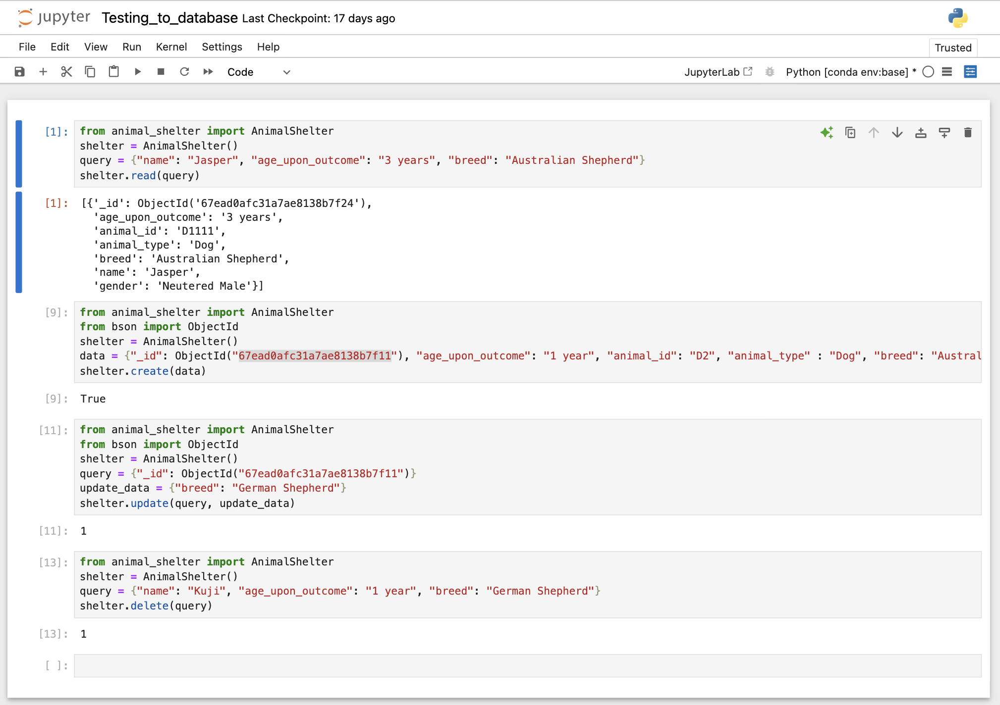

Code Review
SceneManager.cpp Artifact One
This artifact is SceneManager.cpp, which comes from CS330. The purpose of this code is to render 3D objects in a scene. This artifact was originally created in October of 2024. This program is coded in the C++ language. This program consists of many classes that all work together to render 3D objects, apply textures to meshes, apply light sources to the scene, and move around the scene with a camera using keys and the mouse. I selected this artifact to be included in my ePortfolio because it was one of the more complex projects I have worked on during my time at SNHU that is in the software design and engineering category. The specific components in the artifacts that showcase my skills and abilities in software development is the addition of more meshes(objects) in the 3D scene and rendering them with textures, enhancing the textures on past objects to make the scene look more realistic, and enhancing the lighting of the scene. The enhancements improved the artifact as it made it more advanced with better textures, more objects, and better lighting. The enhancements made the 3D scene more realistic. Some specific skills I demonstrated in my enhancement was making the scene more realistic and mastering rendering of 3D objects using OpenGL by creating advanced objects. Some things I learned while creating and enhancing the artifact was troubleshooting. Opening a .sln solution from a previous class that was completed on a Virtual Machine made it hard to get it running again, there were many bugs in the code that had to be resolved by rewiring some paths as well as importing libraries. After spending the past three weeks trying to get this program running from my zipped final project in CS330, I decided to try to replace the OpenGL sample SceneManager.cpp that was given as a starting point in CS330, with my SceneManager.cpp that I created in the final project of that class. This resolved the issues, and I was finally able to work on my .cpp file. The artifact was improved by creating a background with a realistic texture of brick on it, creating a cup with a realistic texture of ice on it and fixing the light sources. The course outcome that I met with these enhancements is demonstrating the ability to use well-founded and innovative techniques, skills, and tools in computing practices for the purpose of implementing computer solutions that deliver value and accomplish industry-specific goals. All of the other outcomes were not met in this artifact as they did not relate with this project. There was not any feedback to incorporate as I made changes to the artifact.
Before enhancement:

After enhancement:

ContactService.java Artifact Two
This artifact is ContactService.java, which comes from CS320. The purpose of this code is to store contacts using a data structure and to be able to add, delete, retrieve, and update contacts. This artifact was originally created in January of 2024. This program is coded in the java language. This program consists of four classes, the two classes Contact.java and ContactService.java work together to add, delete, retrieve, and update contacts. The other two classes ContactTest.java and ContactServiceTest.java are test classes to run JUnit tests to verify the other two classes work as intended. I selected this artifact to be included in my ePortfolio because it was a perfect example of a program using a data structure. I noticed it was currently using an array list, and I knew that I could enhance the code by replacing it with a HashMap data structure. HashMap data structures have a better runtime than array lists and they also are better for larger amounts of data. Considering the data structure is used to store contacts, we are unsure how many contacts would be stored. I believe it is best to assume a large number of contacts would be stored. This results in a HashMap data structure being a better fit for this program to store contacts. The specific components in the artifact that showcase my skills and abilities in algorithms and data structures is the replacement of a data structure with a better suited one. The enhancements improved the artifact as it made it more advanced with a better data structure. We can see in the JUnit test that the program preformed quicker with a HashMap than with an array list. The enhancement made the program run quicker. Some specific skills I demonstrated in my enhancement was mastering data structures within a code by replacing the data structure that is used to a more efficient one, making the artifact perform better and debugging the code while doing so. Some things I learned while creating and enhancing the artifact was troubleshooting. Opening a previous program from a previous class that was completed on a Virtual Machine made it hard to get it running again. The major thing was JUnit not being configured in my Eclipse. After spending time trying to get JUnit tests configured I was able to run it and test the original code. While making the change from an array list to HashMap, the code had errors in both the ContactService.java and ContactServiceTest.java. These errors weren’t difficult to debug by taking it one issue at a time. I learned how HashMaps are easier to get access to the data inside of it than array lists. The artifact was improved by replacing the existing data structure with a better one for this program. The course outcome that I met with these enhancements is demonstrating the ability to use well-founded and innovative techniques, skills, and tools in computing practices for the purpose of implementing computer solutions that deliver value and accomplish industry-specific goals. All of the other outcomes were not met in this artifact as they did not relate with this project. There was not any feedback to incorporate as I made changes to the artifact.
Before enhancement shown with JUnit testing in ContactServiceTest.java:

After enhancement shown with JUnit testing in ContactServiceTest.java:

animal_shelter.py Artifact Three
This artifact is animal_shelter.py, which comes from CS340. The purpose of this code is to make a connection to MongoDB in a python file that has CRUD implementation in it. CRUD refers to the ability to create, update, read and delete data that is found within the database. This artifact was originally created in May of 2024. This program is coded in the python language. To test the CRUD functionality that is in the python file, there is an ipynb file to create, read, update, and delete data in the database. I selected this artifact to be included in my ePortfolio because it was a perfect example of a code fetching data from a database. I wanted to create my own database, add data into it, and make a connection within the existing animal_shelter.py file and test it in Testing_to_database.ipynb file. The specific components in the artifact that showcase my skills and abilities in databases is the replacement of my own database and making a connection to it. The enhancements improved the artifact as the database is my own. Some specific skills I demonstrated in my enhancement was mastering the creation of a database, adding data to it, implement CRUD in. a.py file, and test it in an ipynb file. Some things I learned while creating and enhancing the artifact was troubleshooting. Opening a previous program from a previous class that was completed on a Virtual Machine made it hard to get it running again. The major thing was the connection to the database. After spending time trying to get connection to a database, I was able to make a connection to my own database with my own data in it, and test the CRUD functionality. The artifact was improved by replacing the existing database with my own. The course outcome that I met with these enhancements is demonstrating the ability to use well-founded and innovative techniques, skills, and tools in computing practices for the purpose of implementing computer solutions that deliver value and accomplish industry-specific goals. All of the other outcomes were not met in this artifact as they did not relate with this project. There was not any feedback to incorporate as I made changes to the artifact.
Enhancement shown with testing CRUD functionality in Testing_to_database.ipynb file:
